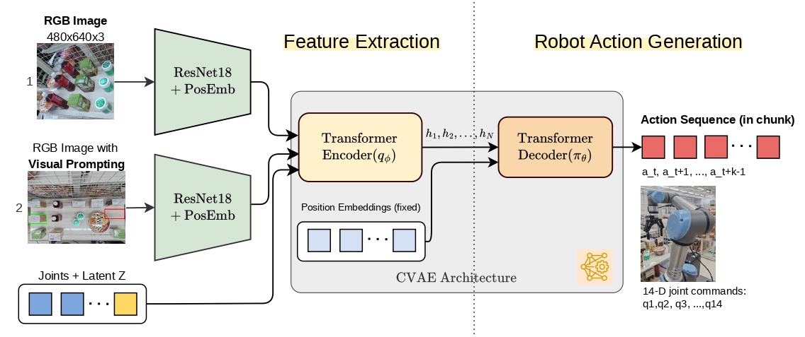

Visual Prompting for Robotic Manipulation with Annotation-Guided Pick-and-Place Using ACT
* Equal contribution
Abstract
Robotic pick-and-place tasks in convenience stores pose challenges due to dense object arrangements, occlusions, and variations in object properties such as color, shape, size, and texture. These factors complicate trajectory planning and grasping. This paper introduces a perception-action pipeline leveraging annotation-guided visual prompting, where bounding box annotations identify both pickable objects and placement locations, providing structured spatial guidance. Instead of traditional step-by-step planning, we employ Action Chunking with Transformers (ACT) as an imitation learning algorithm, enabling the robotic arm to predict chunked action sequences from human demonstrations. This facilitates smooth, adaptive, and data-driven pick-and-place operations. We evaluate our system based on success rate and visual analysis of grasping behavior, demonstrating improved grasp accuracy and adaptability in retail environments.
Why Visual Prompting?
A robot does not always need to understand every object in a cluttered scene. A simple visual cue can tell the policy what matters for the current manipulation task.
Method
The manipulation policy receives both the original camera observation and a visually prompted image. Green annotations indicate the object to pick, while red annotations indicate the placement destination.

Visual features from the original and prompted images are fused with robot joint states and processed by ACT to predict a chunk of future joint-space actions.
Annotation-Guided Manipulation
The annotation encodes task-relevant spatial information directly into the robot's visual observation, reducing the need for exhaustive scene understanding.
Progressive Task Complexity
The system is evaluated across progressively harder scenarios to study how visual prompting behaves as object diversity and manipulation complexity increase.
Similar box-shaped products arranged in a 3×3 layout with one prompted picking target.
Diverse products with different shapes, sizes, colors, and textures arranged in a 3×3 layout.
Diverse products at varying positions with separate picking and placement prompts.
Key Results
Visual prompting successfully guides ACT across increasingly diverse and spatially challenging manipulation scenarios.
Similar rigid products
After additional failure-case data
Across evaluated product categories
Performance varies with object properties and task complexity. Detailed per-category results are available in the paper.
Failure Analysis
Remaining failures are primarily related to physical interaction and precision rather than object selection alone.
Takeaway
🚀 As for future work, the visual prompting framework could be extended toward automatically generated prompts from vision-language models, larger and more diverse manipulation datasets, and general-purpose robot policies that can interpret richer visual and language guidance.
BibTeX
@inproceedings{muttaqien2025visualprompting,
author = {Muhammad A. Muttaqien and Tomohiro Motoda and Ryo Hanai and Yukiyasu Domae},
title = {Visual Prompting for Robotic Manipulation with Annotation-Guided Pick-and-Place Using ACT},
booktitle = {2025 IEEE International Conference on Automation Science and Engineering (CASE)},
year = {2025}
}